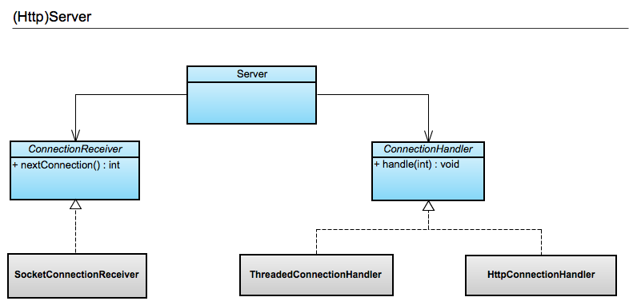
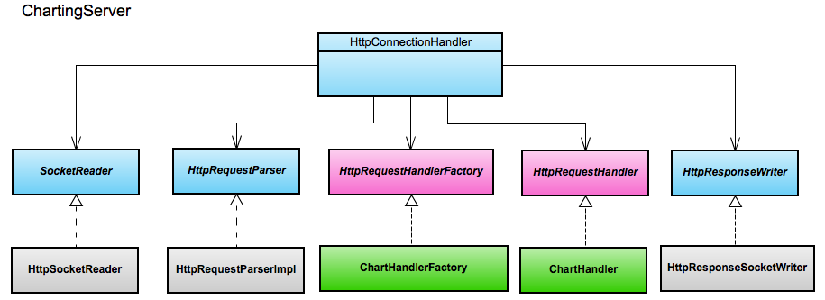
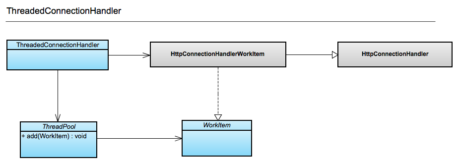

You won't rely on them as much.
So one of the nodes is a TM that relays to its own nodes?
Have the guys play this out...
Dynamic coordinator, everyone does something and we'll see who was last ...
When you tell United + Southwest to commit, you crash, and you never tell Hertz to commit. Hertz rollsback (after timeout), and you must rollback United + SW with a compensating transaction.
Paying bills - t-mobile updates their database & banks database.
TRANSACTION conrol protocol v.s. CONCURRENCY control protocol
(Insert image of coffee beans) So, Flight 333 does not lock when you book Flight 456.
This only works if everyone plays this game. (Philosophers fork problem - though not really - here you MUST start on the same lock (can't start in the middle because you'll round robin and still deadlock))
Because our background script that processes the orders only runs at midnight.
Big Important Company



If you want to learn about our server, checkout our github repo.
/
#